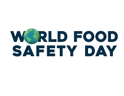

World Overload
Earth
Food Security
Relationships
Safety
Games

Food Safety is very important it might save you life

Why is Food Safety so important
Food safety is important as it helps to protect consumers from the risk of food borne illnesses.
Each year millions of people get sick from food illnesses which can cause you to feel like you have the flu. Food illnesses can also cause serious health problems, even death. Follow these four steps to help keep you and your family safe.
1. Clean
Always wash your food, hands, counters, and cooking tools.
Wash hands in warm soapy water for at least 20 seconds. Do this before and after touching food.
Wash your cutting boards, dishes, forks, spoons, knives, and counter tops with hot soapy water. Do this after working with each food item.
Rinse fruits and veggies
Clean the lids on canned goods before opening
2. Separate (Keep Apart)
Keep raw foods to themselves. Germs can spread from one food to another.
Keep raw meat, poultry, seafood, and eggs away from other foods. Do this in your shopping cart, bags, and fridge.
Do not reuse marinades used on raw foods unless you bring them to a boil first.
Use a special cutting board or plate for raw foods only.
3. Cook
Foods need to get hot and stay hot. Heat kills germs.
Cook to safe temperatures:
Beef, Pork, Lamb 145 °F
Fish 145 °F
Ground Beef, Pork, Lamb 160 °F
Turkey, Chicken, Duck 165 °F
Use a food thermometer to make sure that food is done. You can’t always tell by looking.
4. Chill
Put food in the fridge right away.
2-Hour Rule: Put foods in the fridge or freezer within 2 hours after cooking or buying from the store. Do this within 1 hour if it is 90 degrees or hotter outside.
Never thaw food by simply taking it out of the fridge. Thaw food:
In the fridge
Under cold water
In the microwave
Marinate foods in the fridge.